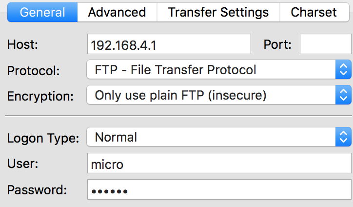
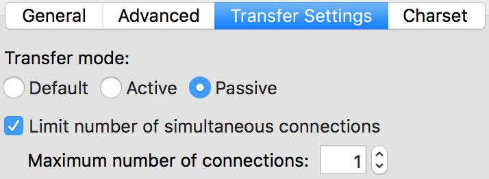

This page discusses the possibility to upload files through the internal FTP server and access the REPL through a Telnet connection.
On each Pycom device, there is a small internal filesystem called /flash, to which the Python code is uploaded. We can access this filesystem through an internally running FTP server, that allows us to make changes to the files. Next to that, a Telnet connection can be made to communicate with the device through the REPL.
In the past, Pycom devices came with the Access Point enabled from the factory. Nowadays, they come with smart-configuration and Pybytes enabled by default, allowing quick and easy provisioning to Pybytes using the app. Follow the steps below to disable that and use enable the Access Point or connect to another WiFi network on boot.
Connect through the Access Point
You can activate the internal Access Point (AP) on boot by using the following:
import pycom
from network import WLAN
import machine
pycom.pybytes_on_boot(False) #we do not want Pybytes using the WLAN
pycom.smart_config_on_boot(False) #we also do not want smart config
pycom.wifi_on_boot(True)
pycom.wifi_mode_on_boot(WLAN.AP)
pycom.wifi_ssid_ap('ssid')
pycom.wifi_pwd_ap('')
machine.reset()
You can find the methods to change the default settings here
Connect through A WiFi Network
It is also possible to connect your pycom device to a WiFi network first, and then connect to its IP address. Note that you will have to figure out its IP address before you can access the FTP server or use MDNS. For that, you can use the following command. This will return a tuple with four items, where the first item will contain the assigned IP address.
import pycom
from network import WLAN
import machine
#You can set this to True if Pybytes connects to your router already, and skip the rest
pycom.pybytes_on_boot(False)
pycom.smart_config_on_boot(False)
pycom.wifi_on_boot(True)
pycom.wifi_mode_on_boot(WLAN.STA)
pycom.wifi_ssid_sta('router ssid')
pycom.wifi_pwd_sta('router password')
wlan.ifconfig()
machine.reset()
Note that if you make changes to the WLAN Configuration in the uploaded Python code, for example by using Pybytes or changing the WiFi credentials, the connection might drop. Moreover, if your program contains continuous reboot loops, sleep cycles or coredumps, you might not be able to recover the wireless connection without safe booting
The file system is accessible via the native FTP server running on each Pycom device. Open a FTP client and connect to:
ftp://192.168.4.1micropythonSee network.server for information on how to change the default credentials.
You can use the same credentials to connect to the telnet server to bring up the REPL:
telnet 192.168.4.1
Note that the REPL works exactly the same over Telnet as it does through Pymakr.
The recommended clients are:
For example, from a macOS/Linux terminal:
ftp 192.168.4.1
telnet 192.168.4.1
The FTP server doesn’t support active mode, only passive mode. Therefore, if you are using the native unix FTP client, run the following command after logging in:
ftp> passive
The FTP server only supports one connection at a time. If using other FTP clients, please check their documentation for how to limit the maximum allowed connections to one at a time.
If using FileZilla, it’s important to configure the settings correctly.
Do not use the quick connect button. Instead, open the site manager and create a new configuration. Within the General tab, ensure that encryption is set to: Only use plain FTP (insecure).

In the Transfer Settings tab, limit the max number of connections to one. Other FTP clients may behave in a similar ways; visit their documentation for more specific information.
